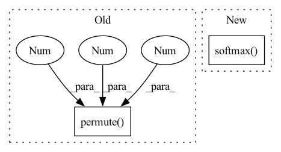

Pattern ID :27798
Before Change
//set decoder input
index = index % self.voc.num_words
decoder_input = index.unsqueeze_(1).permute(2 ,1 ,0 ) .to(self.device)
final_captions = final_captions % self.voc.num_words
caps_text = []
captions = vfunc(final_captions.cpu().numpy())After Change
// add log prob
//print(decoder_output.size())
decoder_output = F.softmax( decoder_output,dim=2)
//print("new size ",decoder_output.size())
tmp = np.log(decoder_output.squeeze(0).cpu().numpy()) + tmp_scores[:,i].view(batch_size,1).cpu().numpy()
beam_output.append(tmp)
In pattern: SUPERPATTERN
Frequency: 4
Non-data size: 2
Instances Fragment ID: 82656108
Project Name: nasib104/video-captioning-models-in-pytorch
Commit Name: 41c7a23067b54653abc772c3730f2ca3da2bad18
Time: 2021-03-22
Author: 41543508+nasib104@users.noreply.github.com
File Name: models/mean_pooling/model.py
M Class Name: MeanPooling
N Class Name: MeanPooling
M Method Name: BeamDecoding(5)
N Method Name: BeamDecoding(5)
M Parent Class: nn.Module
N Parent Class: nn.Module
M File Name: models/mean_pooling/model.py
N File Name: models/mean_pooling/model.py
M Start Line: 277
M End Line: 324
N Start Line: 273
N End Line: 331
Before Change
b, c, h, w = conv.size()
assert h == 1, "the height of conv must be 1"
conv = conv.squeeze(2)
conv = conv.permute(2 , 0 , 1 ) // [w, b, c]
// rnn features
output = self.rnn(conv)After Change
// add log_softmax to converge output
output = F.log_softmax(cls, dim=2)
if self.return_cls:
return output, F.softmax( cls, 2)
return output
Fragment ID: 82656092
Project Name: pooya-mohammadi/crnn-pytorch
Commit Name: 3f16fcac9f51e991f8412b1e1e9b2338f28c8ae7
Time: 2022-05-10
Author: pooyamohammadikazaj@gmail.com
File Name: models/crnn.py
M Class Name: CRNN
N Class Name: CRNN
M Method Name: forward(2)
N Method Name: forward(2)
M Parent Class: nn.Module
N Parent Class: nn.Module
M File Name: models/crnn.py
N File Name: models/crnn.py
M Start Line: 52
M End Line: 62
N Start Line: 33
N End Line: 40
Before Change
// p_cls = F.softmax(p_cls, 2) * p_conf // SSD-like conf
p_cls = torch.exp(p_cls).permute((2, 1, 0))
p_cls = p_cls / p_cls.sum(0).unsqueeze(0) * p_conf.permute((2, 1, 0)) // F.softmax() equivalent
p_cls = p_cls.permute(2 , 1 , 0 )
return torch.cat((xy / ngu, wh, p_conf, p_cls), 2).squeeze().t()
else: // inference
// s = 1.5 // scale_xy (pxy = pxy * s - (s - 1) / 2)After Change
xy = torch.sigmoid(p[..., 0:2]) + grid_xy[0] // x, y
wh = torch.exp(p[..., 2:4]) * anchor_wh[0] // width, height
p_conf = torch.sigmoid(p[:, 4:5]) // Conf
p_cls = F.softmax( p[:, 5:85], 1) * p_conf // SSD-like conf
return torch.cat((xy / ngu[0], wh, p_conf, p_cls), 1).t()
// p = p.view(1, -1, 5 + self.nc) Fragment ID: 82656110
Project Name: nightsnack/yolobile
Commit Name: 636c1cff7a91c0b54c996ef48b36274b08e4a8b8
Time: 2019-08-11
Author: glenn.jocher@ultralytics.com
File Name: models.py
M Class Name: YOLOLayer
N Class Name: YOLOLayer
M Method Name: forward(4)
N Method Name: forward(4)
M Parent Class: nn.Module
N Parent Class: nn.Module
M File Name: models.py
N File Name: models.py
M Start Line: 126
M End Line: 147
N Start Line: 126
N End Line: 135